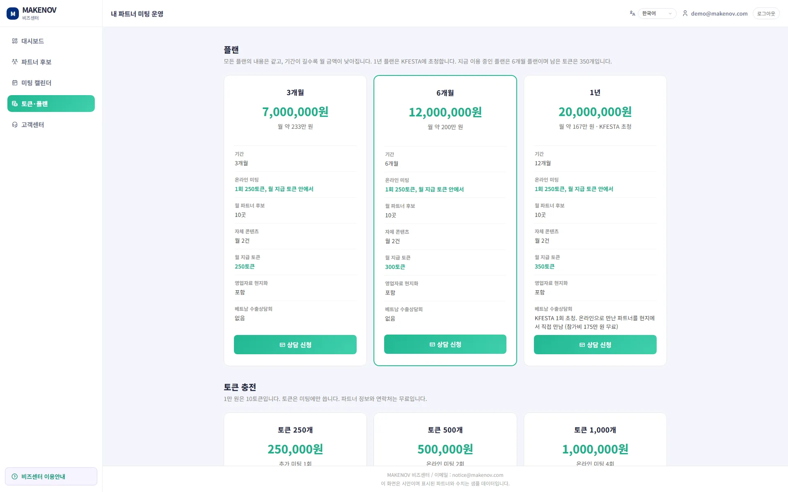

메이크노브 등록, 베트남어 상세페이지, 영업자료 현지화, 시장조사를 진행합니다. 세팅이 끝난 날부터 계약 기간이 시작됩니다.
받으신 계정으로 비즈센터에 로그인하면 대시보드가 열립니다. 이번 달 후보 수, 남은 토큰, 미팅 일정을 한 화면에서 봅니다.

매달 제품에 맞는 파트너 후보 10곳이 파트너 후보 메뉴에 올라옵니다. 신청한 파트너가 부족하면 현지 네트워크로 채웁니다.

후보를 누르면 파트너 정보와 연락처를 볼 수 있습니다. 보는 데는 토큰을 쓰지 않습니다.

후보 중 한 곳을 골라 미팅을 신청합니다. 미팅 1회에 250토큰을 씁니다.
일정이 잡히면 미팅 캘린더에 표시됩니다. 미팅에는 통역과 사전·사후 지원이 들어가고, 끝나면 회의록이 올라옵니다.

토큰은 미팅에만 씁니다. 매달 플랜별로 250, 300, 350토큰을 드립니다. 부족하면 토큰·플랜 메뉴에서 추가로 충전합니다.
